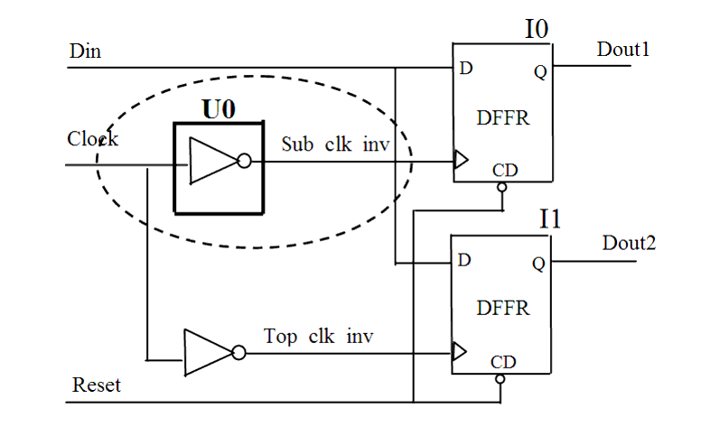

| Description | Grouping all clock generation logic in a single unit helps you locate and define the clock signals during all steps involving clock constraints (for example, synthesis, timing analysis, and clock tree synthesis). |
| Policy | DESIGN |
| Ruleset | CLOCKS |
| Language | VHDL/Verilog |
| Type | Hardware |
| Severity | Error |
This is an example of invalid Verilog code, followed by a circuit diagram that illustrates the problem:
module Sub_clk ( Clock, Sub_clk_inv);
input Clock;
output Sub_clk_inv;
assign Sub_clk_inv = ~Clock;
// NTL_CLK18 fires -- Sub_clk_inv not at top-level of design
endmodule
module ntl_clk18_top (Clock, Reset, Din, Dout1, Dout2 );
input Clock, Reset, Din;
output Dout1, Dout2;
reg Dout1, Dout2;
wire Sub_clk_inv, Top_clk_inv;
Sub_clk U0 ( .Clock(Clock), .Reset(Reset), .Ctrl(Ctrl),
.Sub_clk_inv(Sub_clk_inv) );
assign Top_clk_inv = ~Clock;
always @(posedge Sub_clk_inv)
begin
if (!Reset)
Dout1 <= 0;
else Dout1 <= Din;
end
always @(posedge Top_clk_inv)
begin
if (!Reset)
Dout2 <= 0;
else Dout2 <= Din;
end
...
endmodule
